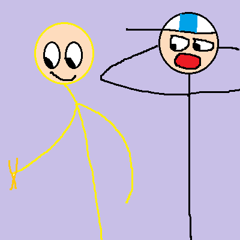

第270篇 日记
2026年10月10日 晴 Sat.
日常生活：带筷子去厕所、鸽子亲嘴
本篇有两个故事
带筷子去厕所
今天下午，我们正在和李钧宸玩，李钧宸的座位上有一双筷子。吴雨哲见到了，就把它拿走了。
然后，他拿着筷子，跑到厕所去。在厕所旁边玩的杨锐和徐浩宸，看到吴雨哲往厕所里跑，还拿着筷子。徐浩宸吃惊地张大眼睛和嘴巴，说：“我靠！谁上厕所还带筷子的？不会要去厕所享用大餐吧！”吴雨哲说：“是的是的，我就是要去厕所加餐。”

我知道吴雨哲这样肯定是闹着玩，不可能真的在厕所吃大便。💩不过看他的行为，我们都不禁哈哈大笑。
厕所里的同学们都被吴雨哲手里的筷子惊呆了！在那和吴雨哲一起开起玩笑来。
上课之后，我问吴雨哲：“你不会真的在厕所吃9+1吧。”他说：“是的是的。”
我真佩服吴雨哲的心胸宽广！就算有这么多人嘲笑他，他也不生气，反而还在那里和他们一起笑！
鸽子亲嘴
今天放学的时候，我们排着一条对，全部走下教学楼。当我们走到一个地方的时候，因为要等前面的班级先走，所以我们在那里等。
突然，李昊雨哈哈大笑，指着附近一栋教学楼的楼顶叫道：“我靠！你们看！那里有鸽子亲嘴！”
“哪里哪里？”其他同学们都吃惊的问着李昊雨。李昊雨指着教学楼楼顶的鸽子🕊说：“看！就是那个。”
我们一看：卧槽！那竟然真的有两只鸽子在亲嘴！